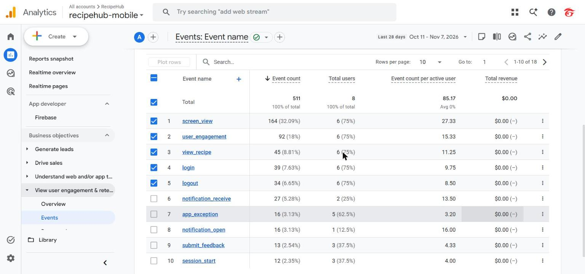

Hệ thống Hỗ trợ Nghiệp vụ & Đào tạo Quầy Pha chế Chuỗi Đồ uống
Kiến trúc MVVM + Provider • Nền tảng Cloud Firebase • Bộ dữ liệu chuẩn Phê La
Đại diện: Nguyễn Hoàng Tuấn (23 tuổi), Landmark 81
Đại diện: Store Admin / Quản lý Đào tạo Chi nhánh
Widget khai báo thuần túy:
context.watch()context.read()Quản lý trạng thái giao diện:
ChangeNotifierHợp đồng nghiệp vụ (Contract):
IAuthServiceIRecipeSourceITrainingRepositoryIStorageServiceIAnalyticsServiceHiện thực hóa Production:
FirebaseAuthServiceFirestoreRecipeSourceFirebaseStorageServiceAndroidFileSaveServicesnapshots().users/{uid}: Chỉ chính chủ đọc hoặc Admin; Client chỉ cập nhật lastSeenAt; quyền và vai trò do Cloud Functions cấp.recipes, sops: Đã ban hành cho phép đọc chung; chỉ Admin có quyền tạo/sửa.quizzes: Ẩn đáp án đúng trong subcollection answerKey, chỉ mở sau khi nộp bài.feedback: Barista chỉ thấy phản hồi của mình; Admin xem và trả lời tất cả.feedback/{uid}/{file}.feedback/{id} kèm URL ảnh.watchAll().feedback/{id}/replies.Download/RecipeHub.recipe.videoUrl) qua video_player native.mm:ss).Ứng dụng nhận thông báo tức thì:
Ứng dụng đang ẩn dưới nền:
recipehub_updates (High Importance).Ứng dụng bị tắt hẳn (Kill process):

Minh chứng thực tế: evidence/lab3/06-firebase-console/01-analytics-events.jpg
view_recipe |
45 lượt | (Top nghiệp vụ) |
login / logout |
39 / 34 lượt | (Tỷ lệ thoát ca cao) |
| FCM receive / open | 27 / 16 lượt | (dữ liệu kiểm thử) |
submit_feedback |
13 lượt | (Phản hồi quầy) |
Tổng cộng: 511 sự kiện • 8 người dùng kiểm thử
Hàm AnalyticsEvent.sanitize tự động lọc toàn bộ email (ký tự @) và chuỗi số điện thoại ≥ 9 chữ số. User ID dùng UID Firebase ngẫu nhiên.
recordFlutterError.incidents/, Web Admin nhận cảnh báo còi và banner đỏ sau ≈ 1 giây.max_lookup_results (mặc định: 50), enable_ai_assist (false), show_crash_demo (true).applyLimit để nạp thêm dữ liệu và chuyển màn hình sang context.watch() để tự vẽ lại giao diện.Bộ test 24 ca E2E đang chuẩn bị thực thi đối soát 3 vòng độc lập trên thiết bị vật lý Redmi 7. Bảng kết quả Pass Rate và phiên khám phá tự do sẽ được ghi nhận sau khi có dữ liệu thật.
stores). Hiện gán mã cố định CN-QUAN1.Expanded, Flexible, ellipsis và chuyển nút dài thành icon.setState after dispose khi đổi vai trò; giải quyết bằng chốt kiểm tra mounted.Opus 5.5: Điều phối kiến trúc tổng thể, rà soát mã nguồn (Code Review), thiết kế Security Rules và kiểm thử thiết bị.
Sonnet 5.5: Chuyển đổi giao diện Flutter theo token NomadKit và xử lý dữ liệu Phê La.
Codex CLI: Lập trình xác thực Email, engine sinh PDF tiếng Việt Unicode và sổ tay SOP 133 trang.
Antigravity (Gemini): Xây dựng Web Admin quản trị, form món và script tạo video mô phỏng bước.
CodeRabbit: Tự động phân tích các Pull Request, kiểm tra bảo mật và đảm bảo flutter analyze đạt 0 issue.
ARTEMIS (Gemini): Thực thi kịch bản kiểm thử E2E tự động qua ngôn ngữ tự nhiên trên Redmi 7.
RecipeHub Mobile – Sẵn sàng chuyển tiếp sang Đồ án Tốt nghiệp (Final Assignment)
Cam kết chất lượng:
✓ flutter analyze: 0 issue
✓ flutter test: 161 unit & widget tests passed
✓ 100% dữ liệu thật trên Cloud Firestore (61 công thức, 25 SOP)